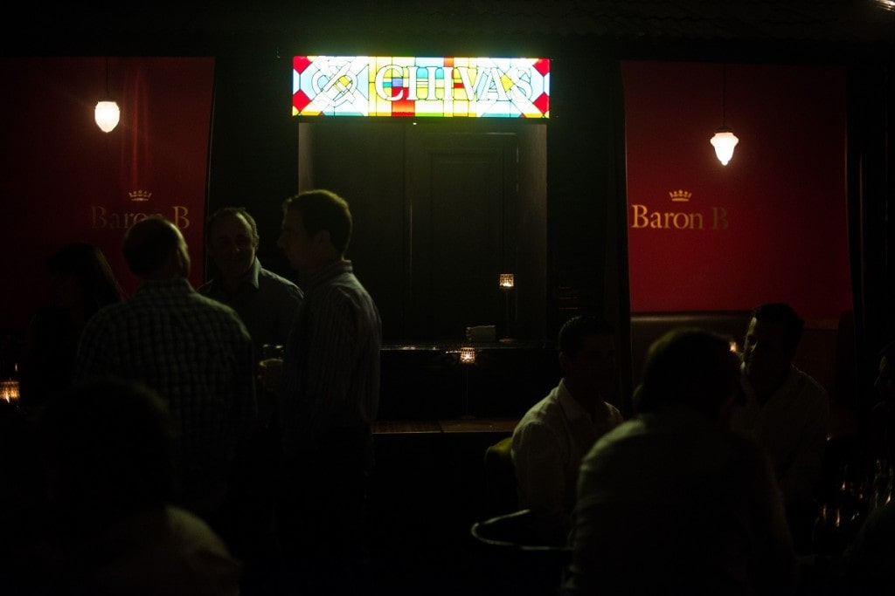

Nicky Harrison
Ubicado en Palermo y escondido detrás de un restaurante de sushi, sólo se puede acceder a este bar por el voz a voz, es decir, cuando una persona con acceso al bar te pueda referir.
Presidente Bar
En el corazón del barrio de Recoleta, ubicado en una antigua casona, Presidente es el bar creado por Sebastián García, un famoso bartender argentino.

Uptown Bar
Uptown es uno de los bares ocultos más llamativos. Lo más original es que su entrada parece ser una estación de subte, incluso se pasa por un vagón original como parte del recorrido para llegar al bar.
La Calle Bar
Oculto detrás de una pizzería, este bar secreto simula ser una verdadera calle empedrada, con altas paredes de ladrillo y una barra impactante.